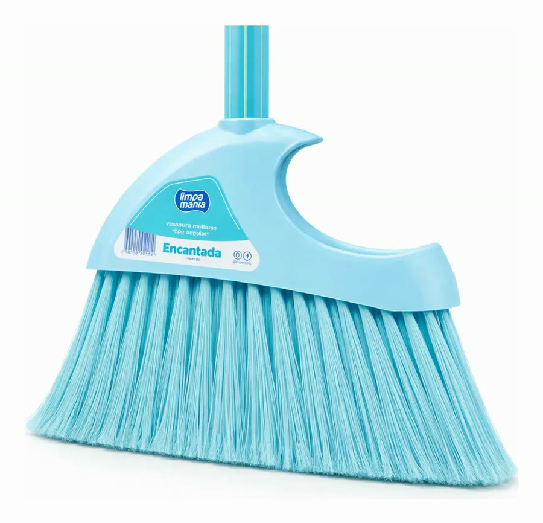
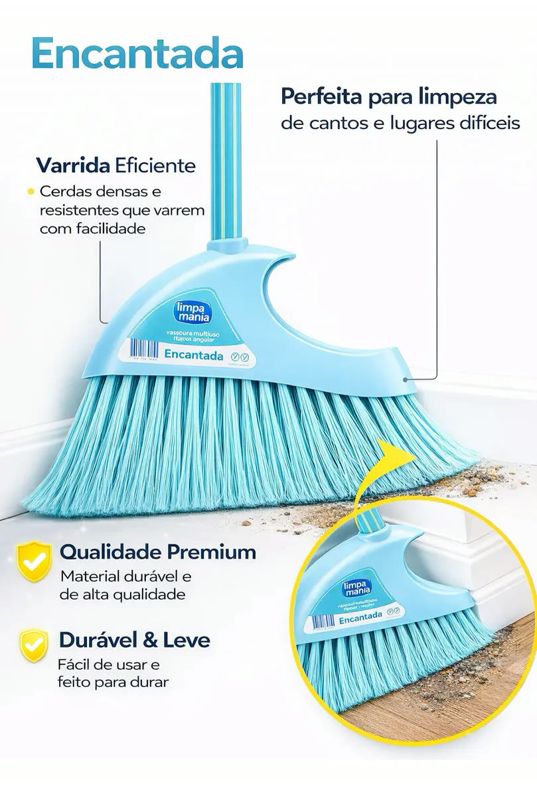
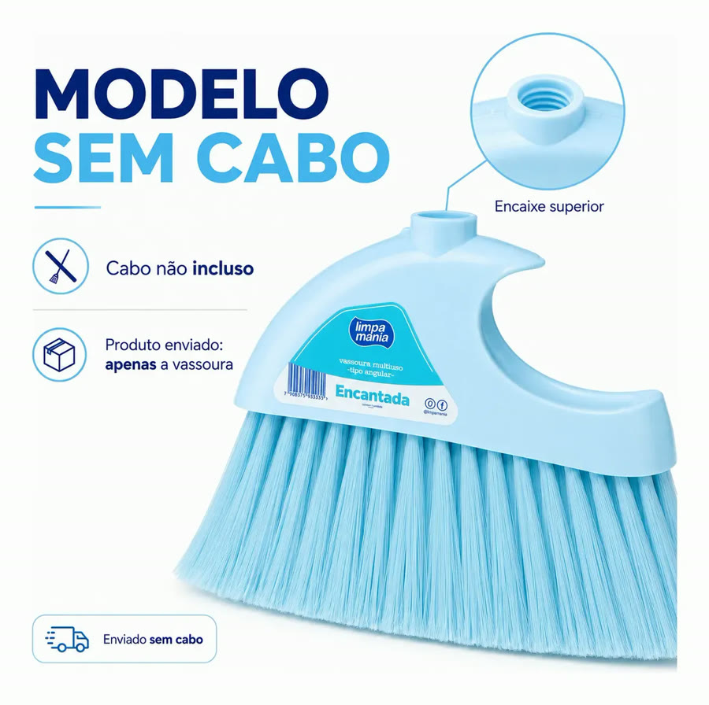
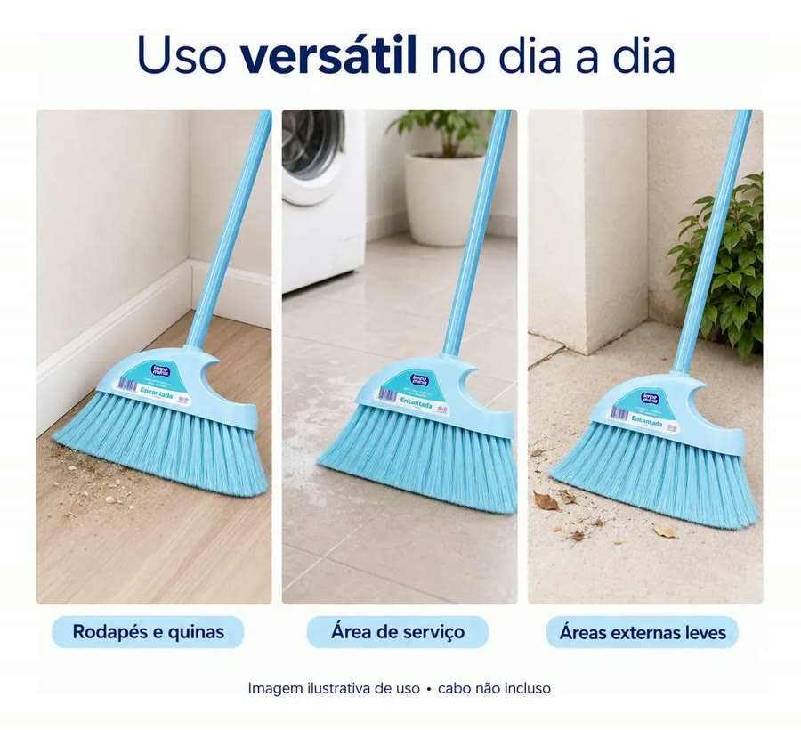
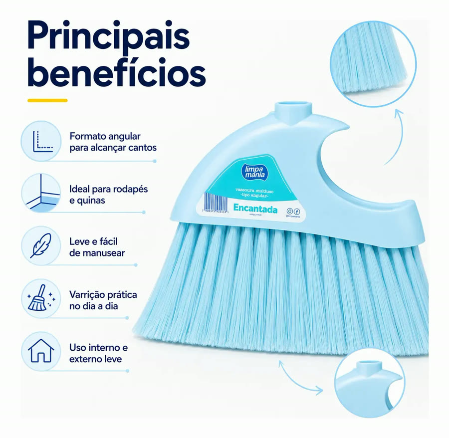
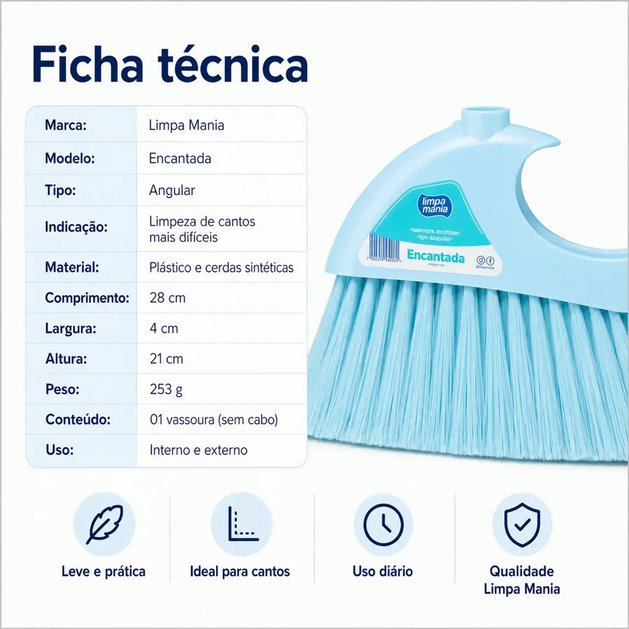
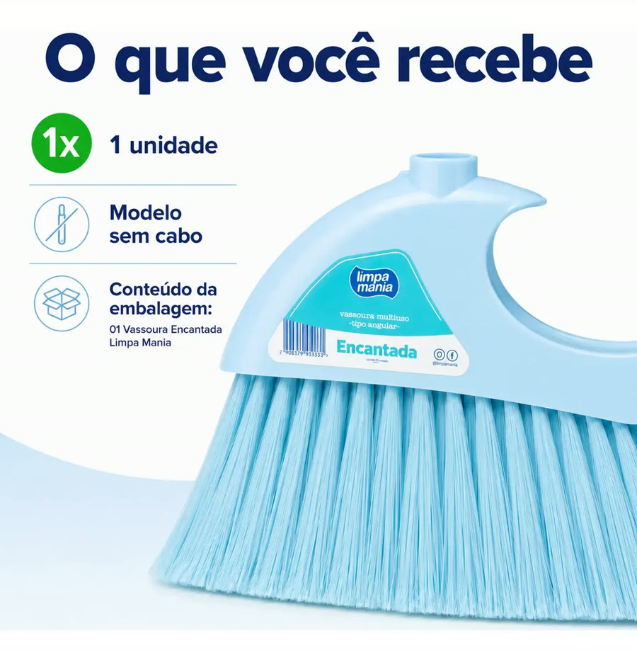

Achado nº 17
Vassoura angular para cantos (vem sem cabo)







O que diz a página oficial do produto
- É uma vassoura de formato angular, com as cerdas inclinadas, para varrer cantos, quinas e rodapés
- Vem só a vassoura, sem cabo; tem um encaixe de rosca em cima para colocar um cabo
- É de plástico com cerdas sintéticas
- Mede 28 cm de comprimento, 21 cm de altura e pesa 253 g
- Segundo o anúncio, serve para uso interno e externo
- No Mercado Livre, tem nota 4,6 com 180 avaliações e mais de mil vendidos
Link de afiliado: se você comprar por ele, a Achadaria pode receber uma comissão, sem custo extra para você. Preço, estoque e entrega são da loja e podem mudar; confira lá antes de comprar.